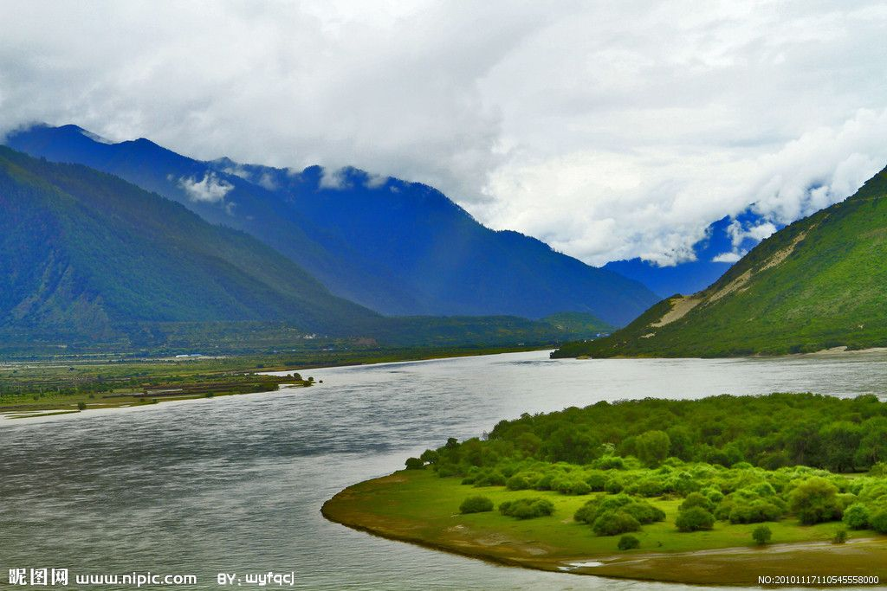
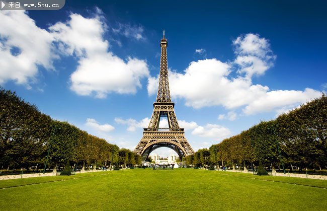

Excepteur sint occaecat cupidatat
velit esse cillum dolore eu fugiat nulla pariatur.
Excepteur sint occaecat cupidatat non proident
你可以了解到更多的地方
you can find more place to travel in your holiday that you want
if you see the next...

西藏:高原上的江南
西藏北邻新疆，东接四川，东北紧靠青海，东南连接云南；周边与缅甸、印度、不丹、尼泊尔、克什米尔等国家及地区接壤，陆地国界线4000多公里，是中国西南边陲的重要门户。西藏以其雄伟壮观、神奇瑰丽的自然风光闻名。它地域辽阔，地貌壮观、资源丰富。自古以来，这片土地上的人们创造了丰富灿烂的民族文化。

埃菲尔铁塔：“首都的瞭望台"
埃菲尔铁塔是巴黎的标志之一，被法国人爱称为“铁娘子”.它和纽约的帝国大厦、东京的电视塔同被誉为世界三大著名建筑。建成后的埃菲尔铁塔高300米，直到1930年它始终是全世界最高的建筑.浪漫的巴黎人给铁塔取了一个美丽的名字——“云中牧女”.
Who We Are
旅游信息的搬运工
Content of our webstation
在这里，你可以找到许多与旅游相关的资讯，国内优美的自然景观，国外独特的异域风情，不同地域的差异和融合，构成了独特的人文自然景观。
others you can know
如果你有好的建议或者有新奇的想法关于旅游或者网站，欢迎联系我们。